This is a plugin that converts UMG into a slate widget, displays a loading screen, and displays the loading percentage with a progress bar and text.
This is a video on how to use it.
1.Activate the plugin
The plugin should probably be enabled by default, but if you can't use it, see below.
First, activate the plugin.
Check the plugin and restart the editor.
2.Configure UMG
Open the Plugin/LoadingScreenWithLoadPercentage Content folder.
If you can't see the plugin folder, check Show Plugin Content.
If you don't have your own UMG loading screen, duplicate BP_LoadingScreenUserWidget and move it to your content folder.
If you want to use your own UMG loading screen, change ParentClass in ClassSettings to LoadingScreenUserWidget.
If you want to display loading progress in a bar, it must be a ProgressBar.
If you want to display the loading progress as text, it must be Text.
Also, the Text of Content must be half-width or full-width %.
3.Show loading screen
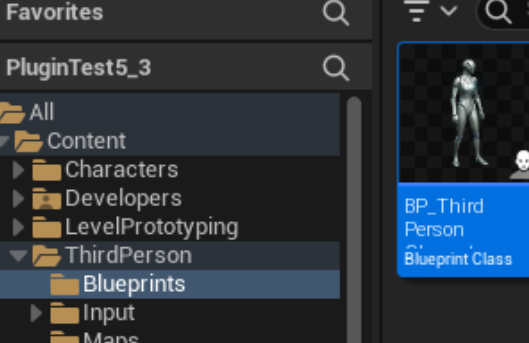
Here we will use a loading screen with the default character as an example.
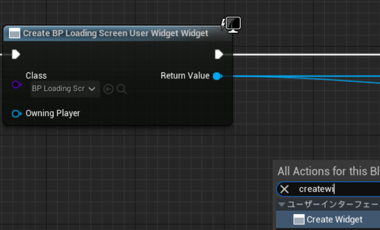
First, select the loading screen you want to use with Create Widget.
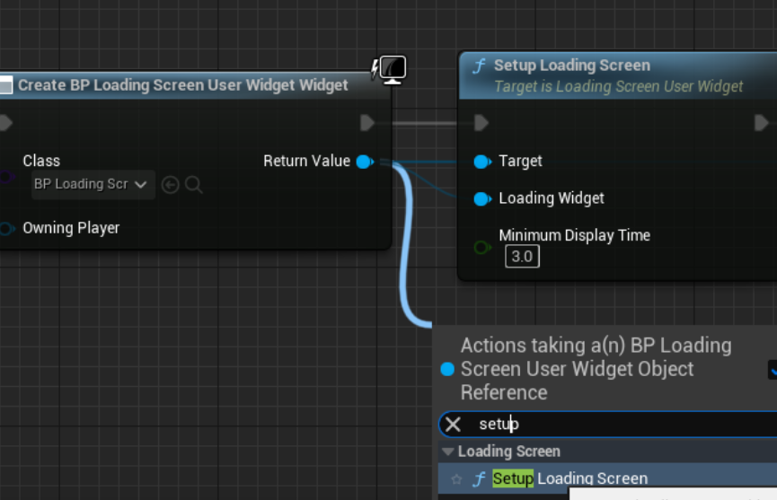
Next, drag the Return Value of CreateWidget and use the SetupLoadingScreen function.
CreateWidget's Return Value needs to be connected not only to the Target but also to the Loading Widget.
Minimum Display Time:
specifies the minimum number of seconds of loading screen you want to display.
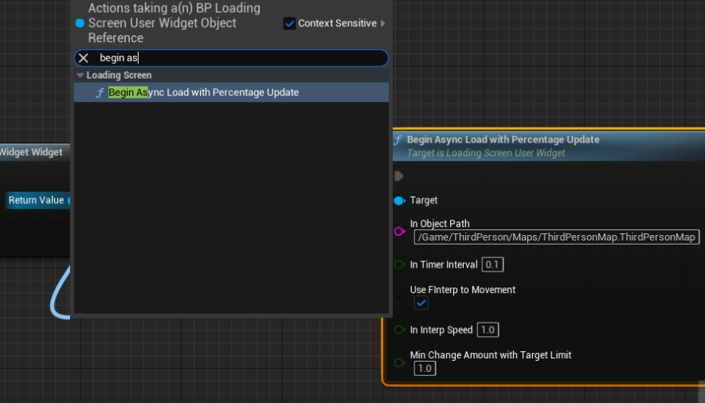
Next, drag the Return Value of CreateWidgetReturn Value of CreateWidget and use the BeginAsyncLoadWithPercentageUpdate function.
In Object Path:
You need the object path of the level you want to open to open the level and get loading progress. It's a little confusing, so I'll write about it below.
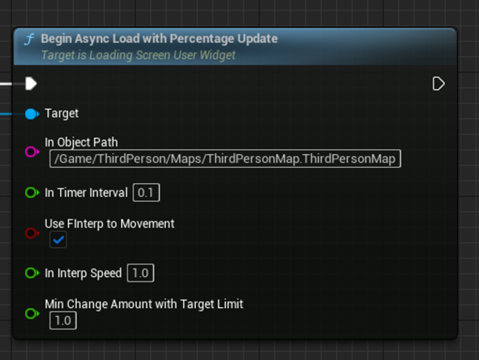
In Timer Interval:
Time interval to update percentages.
Use FInterp to Movement:
Smoothly move the progress bar and text that indicate loading progress. If you remove this check, accurate display will occur, but the values will change rapidly.
In Interp Speed:
The value used for FInterp to. The higher the value, the faster the loading progress will be.
Min Change Amount with Target Limit:
FIntterp to moves much slower when approaching 100%, so set it to the lowest value.
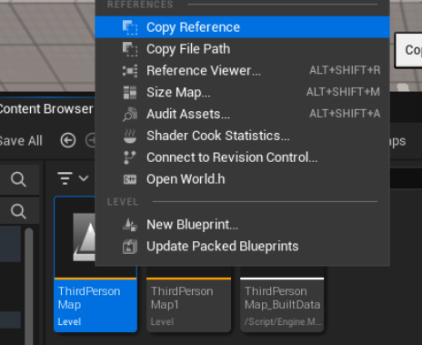
About In Object Path.
In my case the reference is
/Script/Engine.World'/Game/ThirdPerson/Maps/ThirdPersonMap.ThirdPersonMap'
Delete this first and last symbol.
If you play in the viewport or editor window, you can see the percentage movement in the output log.
Searching for Logtemp is invalid.
TargetPercentage: Actual progress.Target of FInterpTo.
CurrentPercentage: Percentage of progress bar or text.
ElapsedTime: Elapsed time since loading started.
Adjust it to your liking.
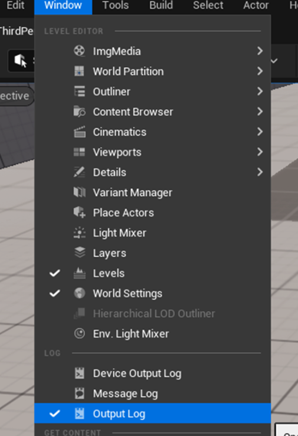
The output log can be displayed from the Window at the top left.
4.Supplement
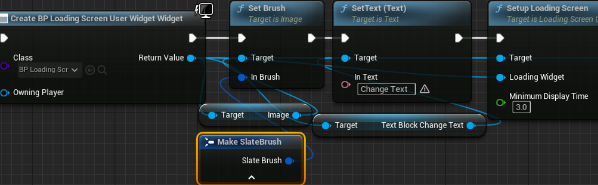
Loading screen editing must be done before SetupLoadingScreen.
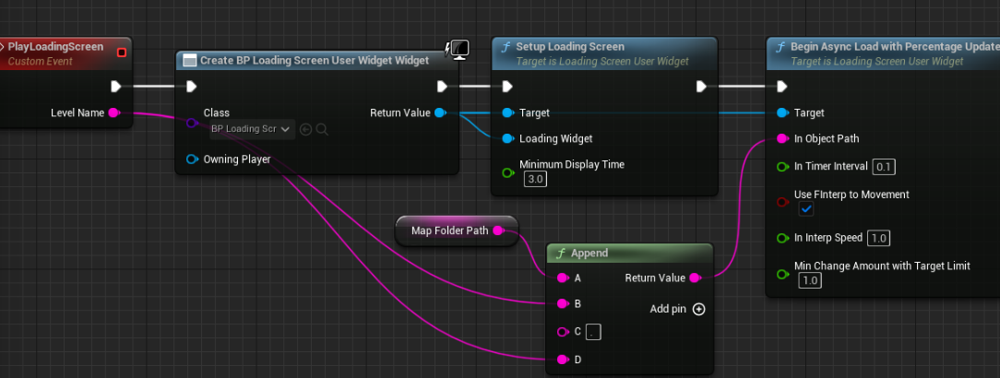
recommend using custom events and interfaces to make it easier to use.
If you want to change it, you can just change that part.
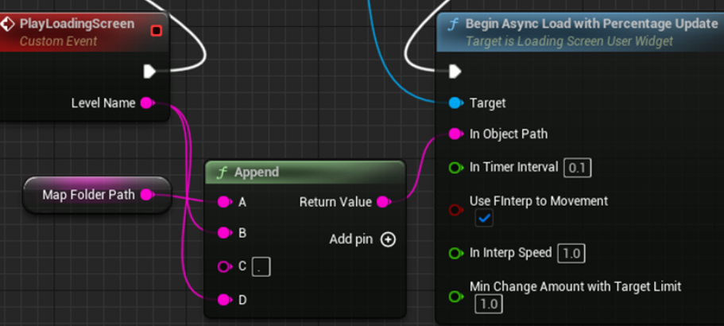
In this example, we decided to put the map in a common folder and created an ObjectPath using Append.
A: MapFolderPath
B&D: LevelName
C: .（dot）
This makes it easier to use because you only need to enter the LevelName.
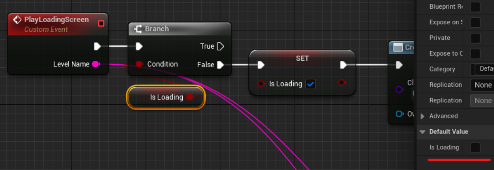
We also recommend creating a Bool variable like IsLoading to limit the display of loading screens.
If you set the default value to false, it will automatically become false after the level transition, which is convenient.
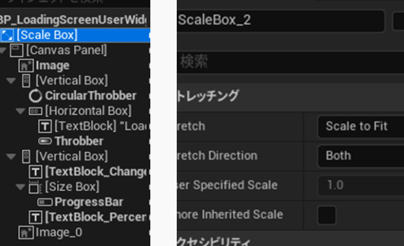
For the loading screen widget, we recommend using Scale Box, Stretch to Scale to Fit, and Stretch Direction to Both. (If you do not do this, the display may change during Open Level)
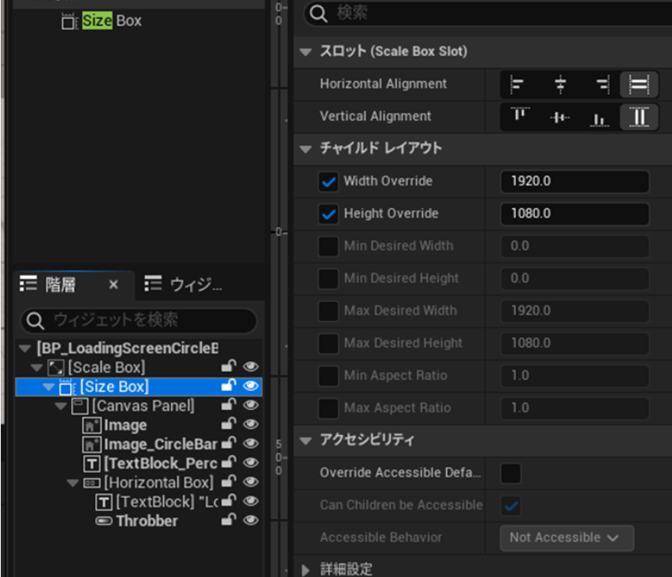
Added on 2024/02/25.
It is easier to adjust if SizeBox is a child of ScaleBox.
Set WidthOverride and HeightOverride to the size you expect.
Added on 2024/10/15
*There was information that using ScaleBox and SizeBox at the same time increases the speed. It may be better not to use SizeBox.
5.Note
5-1.Pseudo pause
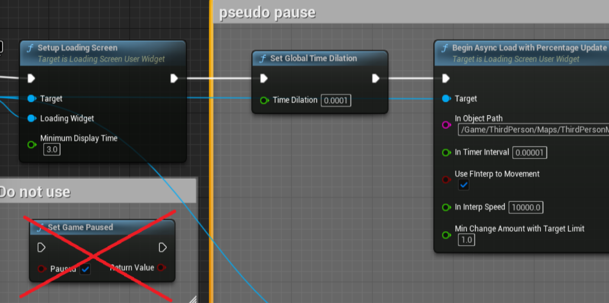
This plugin will not work if you pause the game with SetGamePaused.
You can pseudo-pause it by using SetGlobalTimeDilation (example: 0.0001).
I think it would be a good idea to set InTimerInteraval to a value that is one-tenth of GlobalTimeDilation (example: 0.00001).
In this example, InInterpSpeed of 10000.0 seems good.
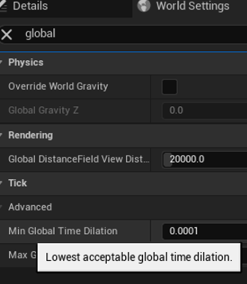
Note that the value of SetGlobalTimeDilation is clamped to the Min Global Time Dilation found in the World Setting.
The above example is for Min Global Time Dilation's default value of 0.0001.
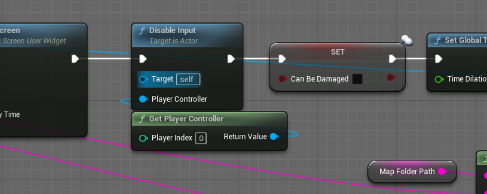
Unlike poses, input actions are effective. If you have a problem, please limit it using DisableInput or a Bool variable such as IsLoading.
Also, since it doesn't completely stop the game, you may want to limit damage processing with something like CanBeDamaged.
5-2.Be careful how you back up
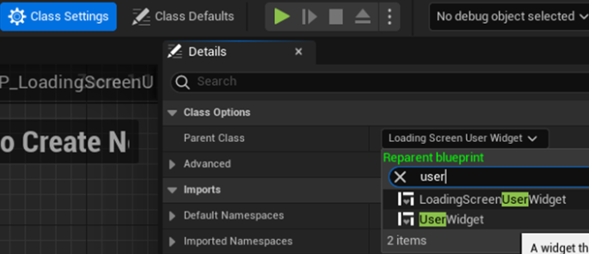
If you set the parent class to LoadingScreenUserWidget, you will not be able to open BP unless this plugin is enabled.
Once you have edited your loading screen, we recommend that you take a backup by duplicating it and changing theparent class to UserWidget.
5-3.Asset Localization
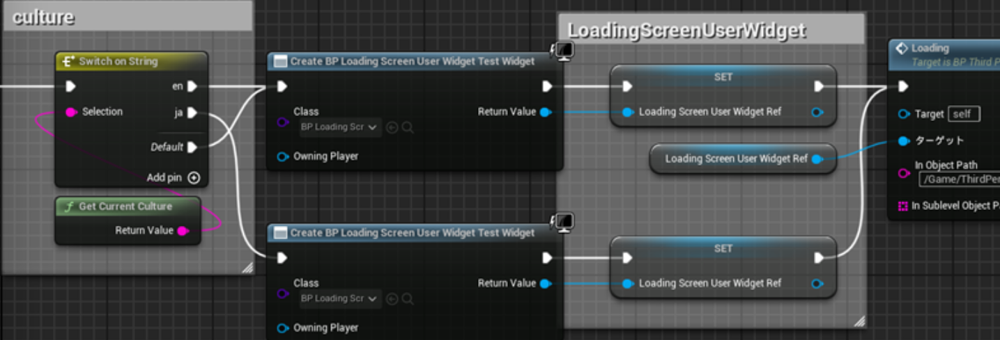
This plugin does not work properly with asset localization.
This is an example of a countermeasure.
Get the current culture and use the switch node to create different widgets for each language.
The variable to be set must be “LoadingScreenUserWidget”.
*Localization dashboard works fine.
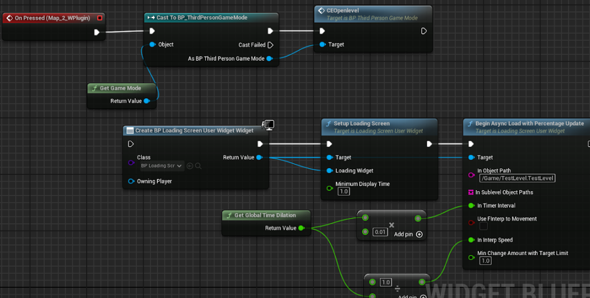
postscript:
When using this plugin's functions on UMG, I found that there were problems with asset localization other than loading screens.
If you have a problem, move it to a custom event such as character or game mode and call it on UMG.
It is important to use this plugin's functions outside of UMG.
6.Update_2023/11/04_ver1.11_SectorsLoadingEffect
Add M_SectorsLoadingEffect.
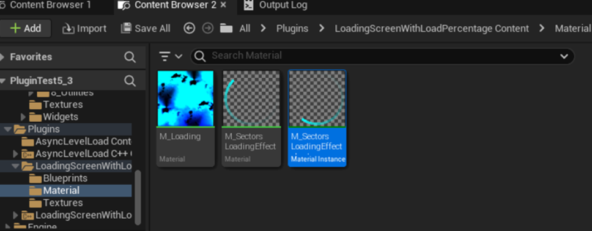
You can change the settings in M_SectorsLoadingEffect_Inst in the plugin's material folder.
7.Update_2024/02/25_ver1.2
7-1.Circle Progress Bar
Now get percentages from BP, Now use Circle Progress Bar.
I have a simple Circle Progress Bar material in my materials folder.
Added on 2024/02/26
I created a material instance of Circle Progress Bar.
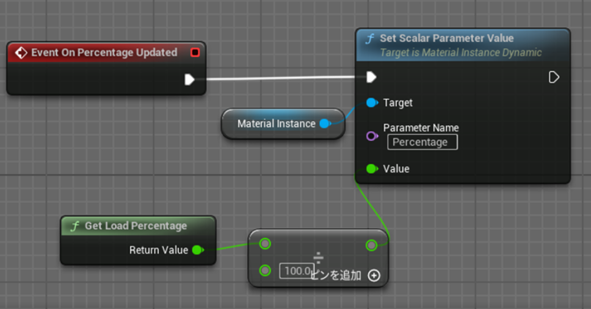
This is the loading screen BP.
EventOnPercentageUpdate: Event called every time a percentage is updated.
GetLoadPercentaeg: Pure function to get load percentage.
*Note that you must use the BeginAsyncLoadWithPercentageUpdate function!
7-2.Migrate FadeIn and FadeOut settings to separate functions
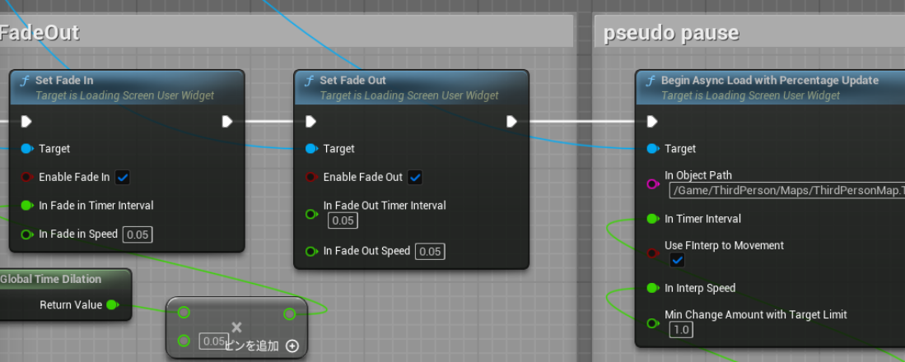
Enable Fade In / Fade Out: Set to true to enable each effect.
In Fade In / Out Timer Interval: Execution interval for each fade step.
In Fade In / Out Speed: Speed of opacity change per step. Higher values = faster transitions.
Note that the two Timer Intervals are affected by Global Time Dilation.
Use the function before starting the load.
8.Update_2024/03/07_ver1.22_Background Material
Add Background Material.
The following sites are recommended for textures used for effects.
Use MakeArray and enter the ObjectPath in InSublevelObjectPath.
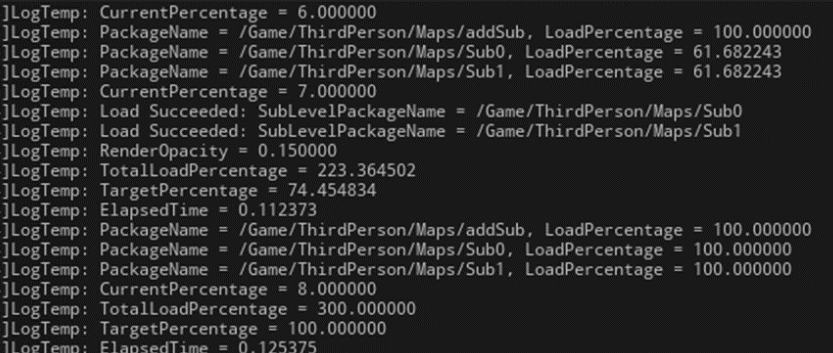
You can check the progress of each load.
The total load percentage is divided by the number of packages.
10.Update_2024/04/09_ver1.25 EFadeInOutInterpType
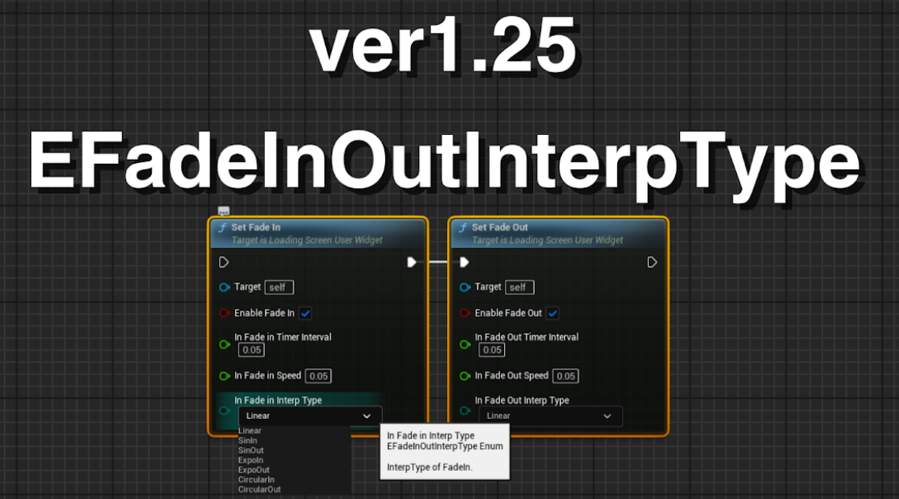
Added interp type to FadeIn and FadeOut.
11.Update_2025/07/19_ver1.26 ZOrder
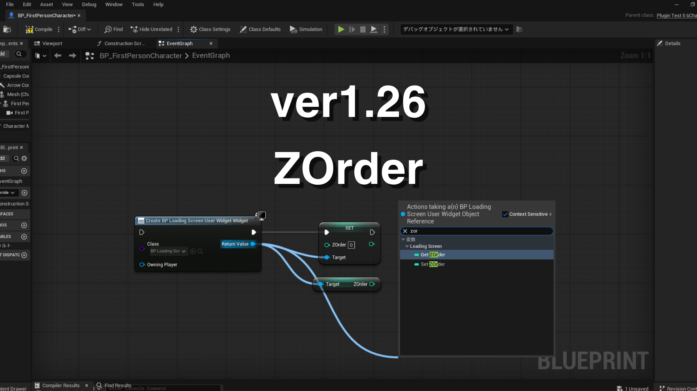
ZOrder set and get is now available.
Widgets with higher ZOrder values are brought to the front.
*The test results show that the ZOrder of the slate widget is -10 compared to UMG. When displaying the load screen, we internally add 10 to the ZOrder to make it feel the same as UMG.